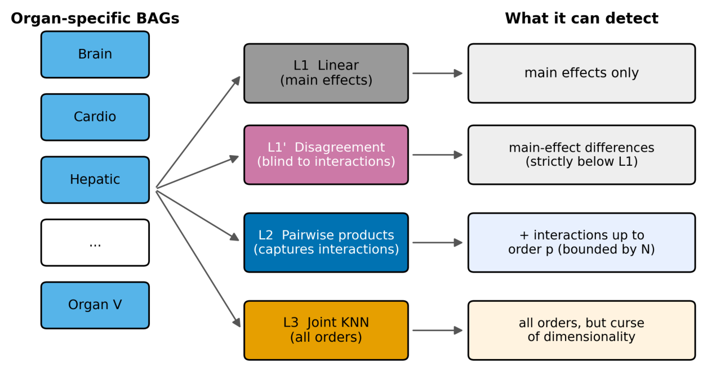

The question and why it is hard
Organ-specific biological age gaps (BAGs) measure how far an organ's protein-predicted age drifts from a person's chronological age. Once you have several organs at once, a tempting question follows: beyond how each organ ages, does the way two organs age together carry information about disease?
The framing is intuitive, and it has been said out loud in the field: no organ system is an island. But intuition here is exactly the problem. The question is an instance of a general multi-view learning problem, where each view is a partial, noisy look at a shared system and we want to know what the views reveal jointly that they hide separately. Several heuristics are in common use, and the most seductive of them is view disagreement: when the organs' individual predictions diverge for a person, treat that divergence as signal.
The field has been asking this question without a rigorous account of what each heuristic can and cannot detect. That gap matters more than it looks, because the data now used to ask it, large harmonized consortia stitched together from many cohorts on different assay platforms, have precisely the structure most likely to manufacture a confident wrong answer.
Takeaway The natural way to look for organ-interaction effects in multi-cohort proteomics will find them whether or not they exist, and the theory says exactly why.
The setup, and why these four levels
Start with a latent factor model. Each view v (an organ) observes features generated by a view-specific latent factor, a shared factor like chronological age, and noise. A scalar outcome depends on the view-specific latents through a function f. Under independence of the latents, f admits a Hoeffding decomposition: a mean, plus main effects for each view, plus pairwise components, plus higher orders, where every component with two or more views has the zero-marginal property. Those higher-order components are the interactions. This decomposition is the whole reason the argument can be made cleanly: it gives interactions a precise, orthogonal definition rather than a vibe.
The four levels: L1 (linear), the best linear predictor in the original features, capturing linear projections of main effects. L1-prime (disagreement), the spread across views in their individual optimal predictions. L2 (cross-view products), the individual views plus products of view summaries, with the pairwise products being the 36 organ-pair BAG products in the application. L3 (joint nonparametric), a k-nearest-neighbor estimate on the concatenated features.

What the theory forces
Three results pin down what each rung can see. The first is the one that should change practice.
Theorem 1: disagreement is blind to interactions. The view-specific optimal prediction E[Y | Xv] depends only on that view's main effect. The other latents are independent of Xv, and the interaction terms have zero marginals, so every interaction component simply integrates out. Disagreement is a deterministic function of these view-specific predictions, so it inherits the blindness: its covariance with any interaction component is exactly zero, for interactions of any order.
Theorem 2: a compression-order tradeoff. With V views, summaries of dimension q per view, and order-p products fit by penalized regression on N samples, the maximum recoverable interaction order satisfies pmax roughly bounded by log(N/σ2) divided by log(Vq). Order-p product features grow combinatorially, so model variance grows and detectable order shrinks as V, q, or summary complexity rise. A corollary is a dimensionality crossover: above a critical total dimensionality, the structured product estimator L2 beats the joint nonparametric L3, which pays the curse of dimensionality.
Theorem 3: leakage under dependence. Theorem 1 assumed independent views. Relax it. If the latents share a pairwise covariance ρ, then the conditional expectation of an interaction given just one of its views is nonzero (E[uvuw | uv] equals ρ times uv squared). The view-specific prediction therefore acquires an interaction-contaminated term, and products of dependent views can carry apparent interaction signal even when f contains no interaction at all. The leakage correlation scales as order ρ2 for Gaussian latents and order ρ3/2 for skewed latents.
Go deeper: why the zero is exact
The lemma behind Theorem 1 is that E[Y | Xv] is a function of the main effect fv alone. Any interaction component fS with S containing v and at least one other view has zero conditional mean given uv, because the other latents in S are independent of Xv and fS has zero marginals by construction of the Hoeffding decomposition. Disagreement, being the standard deviation across the view-specific predictions, is built entirely from these main-effect-only quantities, so no interaction term can enter. The covariance is not small; it is structurally zero.
The simulation as an instrument check
Before trusting the hierarchy on real data, confirm it behaves as the theorems say when the assumptions hold. We generated N = 4,000 samples with V = 4 independent latent organ factors, observed BAGs equal to the latents plus noise, and an outcome with main effects plus a single planted pairwise interaction.
- Cross-view products recovered the planted interaction: L2 reached AUC 0.660 against L1 at 0.620, a gain of +0.040.
- Disagreement stayed at chance: L1-prime AUC 0.518, confirming Theorem 1's blindness where a genuine interaction was present.
- The joint estimator L3 (AUC 0.623) captured the interaction but did not beat the structured products.
Sweeping interaction strength from zero to strong, the L2 minus L1 gain rose monotonically while the disagreement signal stayed near chance at every magnitude. Disagreement does not merely underperform; it is structurally insensitive. And as the number of views grew, L3 fell progressively behind L2, the predicted dimensionality crossover.
Takeaway When interactions exist, L2 finds them, disagreement cannot, and the structured estimator wins in higher dimensions, exactly as the three theorems predict.
The hard part: a positive result that reverses
We applied the framework to the GNPC v1 harmonized dataset: plasma proteomics across 23 contributing cohorts on multiple SomaScan platform versions (v3, v4, v4.1). We retained the nine organ systems whose models genuinely learned age from proteins (Brain, Cardiovascular, Endocrine, Pulmonary, Immune, Hepatic, Pancreas, Digestive, Salivary) and analyzed 18 disease outcomes with at least 50 prevalent cases.
The naive pooled analysis looks clean and exciting. Comparing L1 (nine BAGs plus age and sex) against L2 (adding all 36 pairwise products), pooling all cohorts, pairwise interactions significantly improved prediction for all 18 outcomes after Benjamini-Hochberg correction. Incremental AUCs ran from +0.034 (ALS) to +0.004 (CHF), mean about +0.020. It would be straightforward, and wrong, to stop here.
Cross-cohort replication reveals Simpson's paradox. Recomputing the L2 minus L1 increment within each of the 11 cohorts holding at least 1,000 participants, the within-cohort increments were frequently null or negative while the pooled estimate sat above nearly all of them. For Alzheimer's disease, every individual cohort showed a negative increment while the pooled estimate was positive: textbook Simpson's paradox. The ranking of which diseases gained most did not replicate (Spearman correlations of each cohort's ranking against the pooled ranking ran 0.10 to 0.44, none significant; pairwise cohort agreements ran minus 0.70 to plus 0.90).
When the pooled effect is larger than its parts and does not replicate within parts, the effect lives in the between-group structure, not within individuals.the diagnostic principle
The effect vanishes under cohort adjustment. Adding cohort identity as a covariate collapsed the mean incremental AUC from about +0.020 to minus 0.0006, with several outcomes now significantly negative. Tellingly, adding cohort sharply raised the L1 AUCs themselves (Alzheimer's 0.72 to 0.85, Parkinson's 0.90 to 0.98): diseases are unevenly sourced across cohorts, so cohort identity is itself strongly predictive of diagnosis. With the between-cohort structure absorbed by the covariate, the products had nothing left to explain.
A single-cohort retest confirms the null. The cleanest test removes batch structure entirely. We retrained all organ BAGs within one cohort that had both enough cognitively normal participants to train and enough disease cases to test, then ran the hierarchy inside it. The mean within-cohort increment was minus 0.022. For Alzheimer's, with 1,291 cases and ample power, the increment was significantly negative (minus 0.008, p = 1.6 × 10-4); Parkinson's likewise (minus 0.024, p = 1.8 × 10-5). Adding the product features did not help and mildly hurt, consistent with spending degrees of freedom on absent interactions, the other face of the compression-order tradeoff.
One outcome tempted a different story. Parkinson's showed an unusually high single-view AUC, with the Endocrine BAG alone separating cases at AUC 0.86 and Cohen's d above 1.1. But the endocrine protein set is dominated by pituitary and gonadal hormones that vary strongly with age and menopausal status beyond what a binary sex covariate captures. Removing the dominant organ dropped the full-model AUC only from 0.901 to 0.893, so the signal is distributed rather than a single leaking protein, yet the within-cohort and cohort-adjusted analyses still show it is not organ-interaction biology. We report it as a demographic and batch-linked association, transparently.
Takeaway The striking interaction effect across 18 diseases was entirely between-cohort batch structure: it survived pooling and FDR, but not replication, cohort adjustment, or a single-cohort retest.
Where it stops
A single large cohort measured on one assay platform, or an explicit cohort-level control in the pooled analysis, would remove the between-cohort leakage regime. A genuine cross-organ interaction, if one exists, would then survive rather than vanish under adjustment.
What it opens
The method and the warning are inseparable. If interactions are the target, disagreement must never be used as evidence, because it is blind by construction; explicit cross-view products or a joint estimator are required. And in multi-view, multi-cohort biomarker data the practical rules follow directly from Theorem 3: always include batch or cohort as a covariate, or analyze within batch and meta-analyze; treat a pooled effect that exceeds its within-cohort components as a confounding signature rather than a discovery; and confirm any positive in at least one single-batch cohort.
More broadly, this sits inside a research program about identifiability and trust in high-dimensional biology: characterizing precisely when a structure we observe in the data corresponds to a structure in the world, and when it is an artifact of how the data was assembled. Here the honest answer, in the largest harmonized proteomic dataset currently available, is that organ-aging interactions did not carry disease information beyond the organs individually. The more durable contribution is the machinery that says why the question was so easy to get wrong, and hands the next analyst a way to tell the two apart.